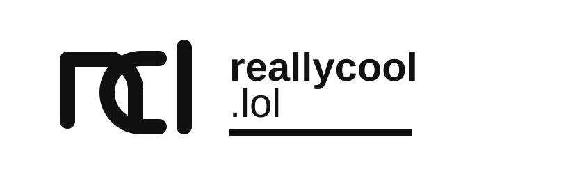
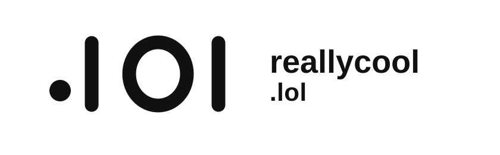

reallycool.lol logo mockups
Three monochrome-first logo directions. Each keeps the recognisable part in shape and rhythm, so color can be added later without carrying the identity.


Three monochrome-first logo directions. Each keeps the recognisable part in shape and rhythm, so color can be added later without carrying the identity.

